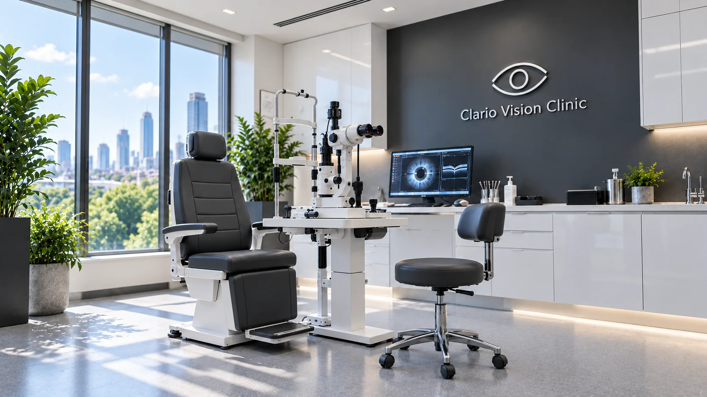
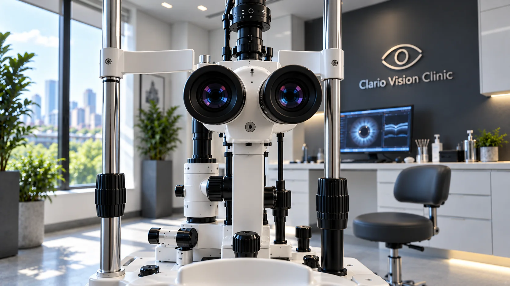

Comprehensive eye exams
Refraction, eye pressure, dilated retinal review and imaging — a complete baseline of your eye health.
Ophthalmology · Diagnostics · Surgery
A modern eye clinic where advanced diagnostics, experienced ophthalmologists and an unhurried pace come together — so every decision about your sight is made with care.
Clario Vision Clinic
We designed Clario around a simple idea: the clearest diagnosis comes from time, the right instruments and a doctor who explains what they see. Natural light, quiet rooms and a single dedicated team make each visit feel considered from the moment you arrive.

Our care
From a first comprehensive exam to surgical care and long-term monitoring, our specialists follow your sight with continuity.
Refraction, eye pressure, dilated retinal review and imaging — a complete baseline of your eye health.
Personalised lens planning with modern intraocular lenses, and a gentle, well-explained recovery.
Candidacy assessment for laser and lens-based vision correction, guided by detailed corneal mapping.
OCT-guided diagnosis and care for macular degeneration, diabetic eye disease and retinal conditions.
Early detection with visual fields and nerve imaging, then steady, measured long-term management.
Thorough tear-film assessment and tailored treatment for lasting comfort, not just short-term relief.

Technology
Our diagnostic suite lets us see the eye in fine, layered detail — and show you exactly what we see, on screen, during your visit.
Your visit
We start by listening — your history, symptoms and what you need your eyes to do.
Measurements and imaging are performed in one visit, in calm, dedicated rooms.
Your ophthalmologist examines the eye directly and reviews every image with you.
A clear, written plan — treatment, timing and follow-up — that you take home.
The clinic
Floor-to-ceiling windows, soft graphite and white, and living greenery throughout. The clinic is designed to lower the pulse — because relaxed patients are examined more accurately.
Rooms open to the city through tall glazing, with glare-controlled examination zones.
Each consultation happens behind a closed door, never in a shared bay.
Step-free access, adjustable exam chairs and space for companions.
Questions
If your question isn’t here, our coordinators are happy to help when you get in touch.
Plan for 60 to 90 minutes. This includes measurements, imaging and time with your ophthalmologist to go through the results.
Most comprehensive exams include dilation so we can see the retina clearly. Your vision may be blurred and light-sensitive for a few hours, so we recommend not driving afterwards.
Your current glasses and contact lenses, a list of medications, any previous eye reports, and sunglasses for after dilation.
No referral is needed for an eye exam. If you have one from your doctor or optometrist, please bring it along.
For routine exams, yes. For refractive or cataract assessments we may ask you to stop wearing them for a period beforehand — we’ll confirm this when you book.
Appointments
Send a request and a care coordinator will contact you within one working day to confirm a time.